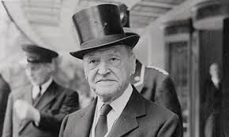
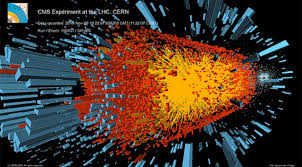
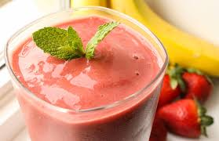

Music

Whether listening to or trying to create it, music has been a passion for as long as I can remember. I remember begging my mom as a young child to put on "Another One Bites the Dust" by Queen. I continue to value music as a lifelong hobby. It helps define different times in my life, including relationships and remarkable memories.
Rocksmith
I play videogames, but sometimes I get that nagging feeling I should be doing something more productive. Not so with Rocksmith. Unlike other rhythm games, you use a real guitar as input to play real songs. I picked it up in my 30s and after a few years, thanks to Rocksmith, I can now actually call myself a guitarist.
Classic Literature
When I have time to read fiction I like to read the classics. It's like traveling through time and seeing what life was like at the time it was written. It's hard to pick a favorite but The Razor's Edge by W. Somerset Maugham is up there.
Astronomy
I was first introduced to astronomy and what lies beyond our own planet by a great teacher in public school at a young age. I'm still in awe at the size and scope of both space and time. I don't pretend to know much about things like quantum mechanics and dark matter but they're still fun to try and think about.
Smoothies
The older I get, the more I believe that what you put in your body has a lot to do with what you ultimately get out of it. I have such a hard time getting a full day's serving of fruits and vegetables unless I pulverise and consume them in liquid form.